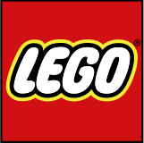

05. – 19. oktoober
Minecrafti Arhitektuurivõistlus
Suured ja väikesed Minecrafti armastajad! On aeg oma ehitustalent proovile panna Eesti esimeses Minecrafti arhitektuurivõistluses, mis leiab aset 05. - 19. oktoobril. Töid hakkavad hindama arhitektid firmast Arhitekt Must!
Võistluse teemaks on „Eramaja“ ning eesmärk on uurida arhitektuuri kasutamist virtuaalmaailmas, kus puuduvad reaalse maailma piirangud. On aeg teada saada, kas sinu ehitis paneb ka elunäinud arhitektid pead pöörama.
Võitjate ametlik avalikustamine ja auhindade jagamine toimub 25.10.2014 MängudeÖÖl.
Auhinnad
Toetajad
-

- 
- 
Info
- Võistlus toimub Minecrafti 1.7.10. versioonis. Osalemiseks saate määrata 1.7.10. versiooni oma profiili seadete alt.
- Osavõtmiseks on vajalik süle- või lauaarvuti (PC, Mac) Minecrafti versioon.
- Kasutada tuleb Minecrafti Classic Texture Packi. Võistlus viiakse läbi Vanilla Minecraftiga juhuslikult genereeritud maastikul.
- Võistlusest osavõtmiseks puudub vanuseline piirang ning osalejate arv ei ole piiratud.
- Võistlustöödes on keelatud teiste inimeste Minecrafti ehitiste osaline või täielik teadlik kopeerimine.
- Ehitamise perioodi lõppedes tõlgendatakse kõiki ehitisi lõpetatuna ning neid hinnatakse seega võrdsetel alustel.
- Võistleja nõustub, et peale võistluse lõppu võib tema ehitis olla osa tasuta allalaetavast kaardist.
- Korraldaja võib ehitisi kujutada fotol või videos nii MängudeÖÖ kui ka veebilehe level1.ee reklaami eesmärgil.
- Võistluse tingimusi rikkuv osaleja eemaldatakse võistlusest.
- Korraldaja jätab endale võimaluse oma äranägemise järgi võistluse tingimusi muuta.
Reeglid
- Võistluse teema on „Eramaja“. Ehitada tuleb igapäevatoimetusteks sobilik elamu, milles on olemas järgnevad ruumid või alad: köök, magamistuba, elutuba, WC/vannituba.
- Žürii hindab tööde juures:
- funktsionaalsust (mida „elamu“ on võimeline pakkuma)
- otstarbekust (kui efektiivselt on eesmärk saavutatud)
- esteetilisust (kui ilus on hoone)
- originaalsust (kuidas erinetakse traditsioonilisest elamisest)
- sobivust Minecrafti keskkonnaga (mängukeskkonna eeliste maksimaalne kasutamine)
- Iga kriteerium annab 1-10 punkti (kõik kriteeriumid kokku 50 punkti). Võitjaks valitakse see projekt, mis saab kõige rohkem punkte.
- Võistlusele eelregistreerimine toimub 28.09. - 02.10. Ka peale seda saab osalemise soovist teada anda, kuid serverisse lisamisega võib minna maksimaalselt 24 tundi.
- Võistlustöid saab serveris ehitada: 05. - 19.10.14.
- Võistlustöid hindavad arhitektidest koosnev žürii arhitektuurifirmast Arhitekt Must ning Level1 liikmed.
- Võitjate ametlik avalikustamine ja auhindade jagamine toimub 25.10.14 MängudeÖÖl. (Tähelepanu: MängudeÖÖ üritusest saab osa võtta alates 16. eluaastast, aga ehitusvõistlusest saavad kõik osa võtta.)
- Kõikide võitjatega võtame ka ise ühendust ning lepime kokku, kuidas saame auhinna üle anda.
- Osaleja saab ehitamiseks ühe 50x50 ruudu suuruse ala, mis määratakse talle juhuslikult. Maksimaalne ehituskõrgus on 256 plokki. Ehitada saab ainult selle ala piirides. Määratud ala ei ole võimalik vahetada. Ehitusala asukohast teavitame e-maili teel.
Küsimuste korral kirjuta
levelup@level1.ee